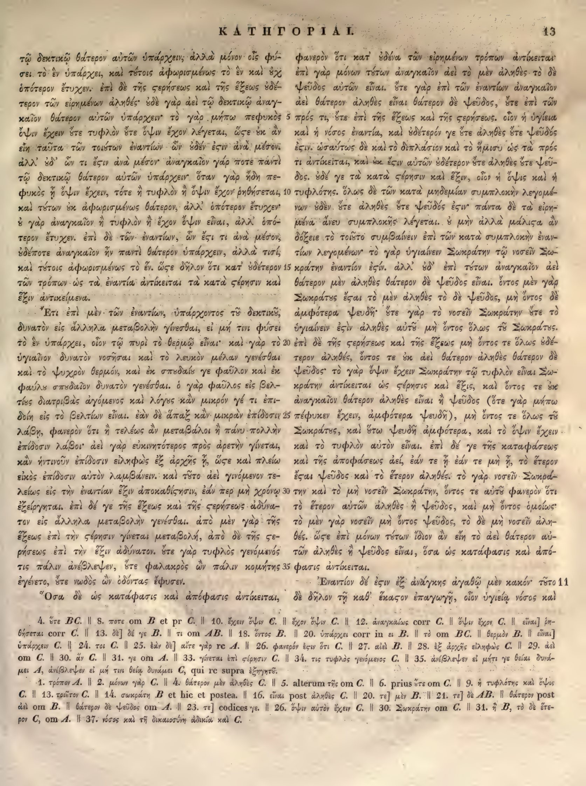

13a
| 1 | τῷ δεκτικῷ θάτερον αὐτῶν ὑπάρχειν, ἀλλὰ μόνον οἷς φύ- | 0.95 |
|---|---|---|
| 2 | σει τὸ ἐν ὑπάρχει, καὶ τούτοις ἀφωρισμένως· <choice><sic>τὸ ἐν καὶ ὄχ</sic><corr>τὸ ἓν καὶ οὐχ</corr></choice> | 0.90 |
| 3 | ὁπότερον ἔτυχεν. ἐπὶ δὲ τῆς στερήσεως καὶ τῆς ἕξεως ὁδέ- | 0.90 |
| 4 | τερον τῶν εἰρημένων ἀληθές· οὐδὲ γὰρ ἀεὶ τῷ δεκτικῷ ἀναγ- | 0.90 |
| 5 | καῖον θάτερον αὐτῶν ὑπάρχειν· τὸ γὰρ μήπω πεφυκὸς | 0.95 |
| 6 | ὄψιν ἔχειν ὥστε τυφλὸν ὥστε ὄψιν ἔχον λέγεται, <choice><sic>ὥςε</sic><corr>ὥστε</corr></choice> ἐν ἂν | 0.85 |
| 7 | εἴη ταῦτα τῶν τοιούτων ἐναντίων ὧν οὐδέν <choice><sic>ἐςιν</sic><corr>ἐστιν</corr></choice> ἀνὰ μέσον· | 0.90 |
| 8 | ἀλλ’ ὧν τι ἔστιν ἀνὰ μέσον· ἀναγκαῖον γάρ ποτε παντὶ | 0.90 |
| 9 | τῷ δεκτικῷ θάτερον αὐτῶν ὑπάρχειν. ὅταν γὰρ ἤδη πε- | 0.90 |
| 10 | φυκὸς ᾖ ὄψιν ἔχειν, τότε ἢ τυφλὸν ἢ ὄψιν ἔχον ῥηθήσεται, | 0.90 |
| 11 | καὶ τούτων οὐκ ἀφωρισμένως θάτερον, ἀλλ’ ὁπότερον ἔτυχεν· | 0.90 |
| 12 | οὐ γὰρ ἀναγκαῖον ἢ τυφλὸν ἢ ἔχον ὄψιν εἶναι, ἀλλ’ ὁπό- | 0.90 |
| 13 | τερον ἔτυχεν. ἐπὶ δὲ τῶν ἐναντίων, ὧν <choice><sic>ἔςι</sic><corr>ἔστι</corr></choice> τι ἀνὰ μέσον, | 0.90 |
| 14 | οὐδέποτε ἀναγκαῖον ἦν παντὶ θάτερον ὑπάρχειν, ἀλλά τισί, | 0.90 |
| 15 | καὶ τούτοις ἀφωρισμένως τὸ ἕν. <choice><sic>ὥςε</sic><corr>ὥστε</corr></choice> δῆλον ὅτι κατ’ οὐδέτερον | 0.90 |
| 16 | τῶν τρόπων ὡς τὰ ἐναντία ἀντίκειται τὰ κατὰ <choice><sic>ςέρησιν</sic><corr>στέρησιν</corr></choice> καὶ | 0.90 |
| 17 | ἕξιν ἀντικείμενα. | 0.95 |
| 18 | Ἔτι ἐπὶ μὲν τῶν ἐναντίων, ὑπάρχοντος τῷ δεκτικῷ, | 0.90 |
| 19 | δυνατὸν εἰς ἄλληλα μεταβολὴν γίνεσθαι, εἰ μή τινι φύσει | 0.90 |
| 20 | τὸ ἓν ὑπάρχει, οἷον τῷ πυρὶ τὸ θερμῷ εἶναι· καὶ γὰρ τὸ | 0.90 |
| 21 | ὑγιαῖνον δυνατὸν νοσῆσαι καὶ τὸ λευκὸν μέλαν γενέσθαι | 0.90 |
| 22 | καὶ τὸ ψυχρὸν θερμόν, καὶ ἐκ σπουδαίς γε φαῦλον καὶ ἐκ | 0.85 |
| 23 | φαύλς σπουδαῖον δυνατὸν γενέσθαι. ὁ γὰρ φαῦλος εἰς βελ- | 0.85 |
| 24 | τίους διατριβὰς ἀγόμενος καὶ λόγους κἂν μικρόν γέ τι ἐπι- | 0.90 |
| 25 | δοίη εἰς τὸ βελτίον εἶναι. ἐὰν δὲ ἅπαξ κἂν μικρὰν ἐπίδοσιν | 0.90 |
| 26 | λάβῃ, φανερὸν ὅτι ἢ τελέως ἂν μεταβάλοι ἢ πάνυ πολλὴν | 0.90 |
| 27 | ἐπίδοσιν λάβοι· ἀεὶ γὰρ εὐκινητότερος πρὸς ἀρετὴν γίνεται, | 0.90 |
| 28 | κἂν ἡντινοῦν ἐπίδοσιν εἰληφὼς ἐξ ἀρχῆς ᾖ, ὥστε καὶ πλείω | 0.90 |
| 29 | εἰκὸς ἐπίδοσιν αὐτὸν λαμβάνειν. καὶ τοῦτο ἀεὶ γινόμενον τε- | 0.90 |
| 30 | λείως εἰς τὴν ἐναντίαν ἕξιν ἀποκαθίστησιν, ἐάν περ μὴ χρόνῳ | 0.90 |
| 31 | ἐξείργηται. ἐπὶ δέ γε τῆς ἕξεως καὶ τῆς στερήσεως ἀδύνα- | 0.90 |
| 32 | τον εἰς ἄλληλα μεταβολὴν γενέσθαι. ἀπὸ μὲν γὰρ τῆς | 0.90 |
| 33 | ἕξεως ἐπὶ τὴν στέρησιν γίνεται μεταβολή, ἀπὸ δὲ τῆς στε- | 0.90 |
| 34 | ρήσεως ἐπὶ τὴν ἕξιν ἀδύνατον. ὥστε γὰρ τυφλὸς γενόμενός | 0.90 |
| 35 | τις πάλιν ἀνέβλεψεν, ὥστε φαλακρὸς ὢν πάλιν κομήτης | 0.90 |
| 36 | ἐγένετο, ὥστε νωδὸς ὢν ὀδόντας ἔφυσεν. | 0.90 |
| 37 | Ὅσα δὲ ὡς κατάφασις καὶ ἀπόφασις ἀντίκειται, | 0.90 |
13b
| 1 | φανερὸν ὅτι κατ’ οὐδένα τῶν εἰρημένων τρόπων ἀντίκεται· | 0.95 |
|---|---|---|
| 2 | ἐπὶ γὰρ μόνων τούτων ἀναγκαῖον ἀεὶ τὸ μὲν ἀληθὲς τὸ δὲ | 0.95 |
| 3 | ψεῦδος αὐτῶν εἶναι. ὅτε γὰρ ἐπὶ τῶν ἐναντίων ἀναγκαῖον | 0.95 |
| 4 | ἀεὶ θάτερον ἀληθὲς εἶναι θάτερον δὲ ψεῦδος, ὅτε ἐπὶ τῶν | 0.95 |
| 5 | πρός τι, ὅτε ἐπὶ τῆς ἕξεως καὶ τῆς <choice><sic>ςερήσεως</sic><corr>στερήσεως</corr></choice>. οἷον ἡ ὑγίεια | 0.95 |
| 6 | καὶ ἡ νόσος ἐναντία, καὶ οὐδέτερόν γε <choice><sic>ὅτε ἀληθὲς ὅτε ψεῦδος</sic><corr>οὔτε ἀληθὲς οὔτε ψεῦδος</corr></choice> | 0.95 |
| 7 | <choice><sic>ἐςιν</sic><corr>ἐστιν</corr></choice>. ὡσαύτως δὲ καὶ τὸ διπλάσιον καὶ τὸ ἥμισυ ὡς τὰ πρός | 0.95 |
| 8 | τι ἀντίκεται, καὶ οὐκ <choice><sic>ἔςιν</sic><corr>ἔστιν</corr></choice> αὐτῶν οὐδέτερον <choice><sic>ὅτε ἀληθὲς ὅτε ψεῦ-</sic><corr>οὔτε ἀληθὲς οὔτε ψεῦ-</corr></choice> | 0.95 |
| 9 | δος. οὐδέ γε τὰ κατὰ στέρησιν καὶ ἕξιν, οἷον ἡ ὄψις καὶ ἡ | 0.95 |
| 10 | τυφλότης. ὅλως δὲ τῶν κατὰ μηδεμίαν συμπλοκὴν λεγομέ- | 0.95 |
| 11 | νων <choice><sic>οὐδὲν ὅτε ἀληθὲς ὅτε ψεῦδός</sic><corr>οὐδὲν οὔτε ἀληθὲς οὔτε ψεῦδός</corr></choice> <choice><sic>ἐςιν</sic><corr>ἐστιν</corr></choice>· πάντα δὲ τὰ εἰρη- | 0.95 |
| 12 | μένα ἄνευ συμπλοκῆς λέγεται. ὃ μὴν ἀλλὰ <choice><sic>μάλιςα</sic><corr>μάλιστα</corr></choice> ἂν | 0.95 |
| 13 | δόξειε τὸ τοιοῦτο συμβαίνειν ἐπὶ τῶν κατὰ συμπλοκὴν ἐναν- | 0.95 |
| 14 | τίων λεγομένων· τὸ γὰρ ὑγιαίνειν Σωκράτην τῷ νοσεῖν Σω- | 0.95 |
| 15 | κράτην ἐναντίον <choice><sic>ἐςίν</sic><corr>ἐστίν</corr></choice>. ἀλλ’ οὐδ’ ἐπὶ τούτων ἀναγκαῖον ἀεὶ | 0.95 |
| 16 | θάτερον μὲν ἀληθὲς θάτερον δὲ ψεῦδος εἶναι. ὄντος μὲν γὰρ | 0.95 |
| 17 | Σωκράτους <choice><sic>ἔςαι</sic><corr>ἔσται</corr></choice> τὸ μὲν ἀληθὲς τὸ δὲ ψεῦδος, μὴ ὄντος δὲ | 0.95 |
| 18 | ἀμφότερα ψευδῆ· <choice><sic>ὅτε γὰρ τὸ νοσεῖν Σωκράτην ὅτε τὸ</sic><corr>οὔτε γὰρ τὸ νοσεῖν Σωκράτην οὔτε τὸ</corr></choice> | 0.95 |
| 19 | ὑγιαίνειν <choice><sic>ἐςὶν</sic><corr>ἐστὶν</corr></choice> ἀληθὲς αὐτῷ μὴ ὄντος ὅλως τοῦ Σωκράτους. | 0.95 |
| 20 | ἐπὶ δὲ τῆς <choice><sic>ςερήσεως</sic><corr>στερήσεως</corr></choice> καὶ τῆς ἕξεως μὴ ὄντος τε ὅλως οὐδέ- | 0.95 |
| 21 | τερον ἀληθές, ὄντος τε οὐκ ἀεὶ θάτερον ἀληθὲς θάτερον δὲ | 0.95 |
| 22 | ψεῦδος· τὸ γὰρ ὄψιν ἔχειν Σωκράτην τῷ τυφλὸν εἶναι Σω- | 0.95 |
| 23 | κράτην ἀντίκεται ὡς στέρησις καὶ ἕξις, καὶ ὄντος τε οὐκ | 0.95 |
| 24 | ἀναγκαῖον θάτερον ἀληθὲς εἶναι ἢ ψεῦδος (ὅτε γὰρ μήπω | 0.95 |
| 25 | πέφυκεν ἔχειν, ἀμφότερα ψευδῆ), μὴ ὄντος τε ὅλως τοῦ | 0.95 |
| 26 | Σωκράτους, καὶ οὕτω ψευδῆ ἀμφότερα, καὶ τὸ ὄψιν ἔχειν | 0.95 |
| 27 | καὶ τὸ τυφλὸν αὐτὸν εἶναι. ἐπὶ δέ γε τῆς καταφάσεως | 0.95 |
| 28 | καὶ τῆς ἀποφάσεως ἀεί, ἐάν τε ᾖ ἐάν τε μὴ ᾖ, τὸ ἕτερον | 0.95 |
| 29 | <choice><sic>ἔςαι</sic><corr>ἔσται</corr></choice> ψεῦδος καὶ τὸ ἕτερον ἀληθές· τὸ γὰρ νοσεῖν Σωκρά- | 0.95 |
| 30 | την καὶ τὸ μὴ νοσεῖν Σωκράτην, ὄντος τε αὐτῷ φανερὸν ὅτι | 0.95 |
| 31 | τὸ ἕτερον αὐτῶν ἀληθὲς ἢ ψεῦδος, καὶ μὴ ὄντος ὁμοίως· | 0.95 |
| 32 | τὸ μὲν γὰρ νοσεῖν μὴ ὄντος ψεῦδος, τὸ δὲ μὴ νοσεῖν ἀλη- | 0.95 |
| 33 | θές. ὥστε ἐπὶ μόνων τούτων ἴδιον ἂν εἴη τὸ ἀεὶ θάτερον αὐ- | 0.95 |
| 34 | τῶν ἀληθὲς ἢ ψεῦδος εἶναι, ὅσα ὡς κατάφασις καὶ ἀπό- | 0.95 |
| 35 | φασις ἀντίκεται. | 0.95 |
| 36 | Ἐναντίον δέ <choice><sic>ἐςιν</sic><corr>ἐστιν</corr></choice> ἐξ ἀνάγκης ἀγαθῷ μὲν κακόν· τοῦτο | 0.95 |
| 37 | δὲ δῆλον τῇ καθ’ <choice><sic>ἕκαςον</sic><corr>ἕκαστον</corr></choice> ἐπαγωγῇ, οἷον ὑγιείᾳ νόσος καὶ | 0.95 |
Textual apparatus
- note_1 [page] ὑπάρχειν C. || 24. τοι C. || 25. ἐὰν δὲ] αὖτε γὰρ τε A. || 26. φανερόν ἐστιν ὅτι C. || 27. αἰεὶ B. || 28. ἐξ ἀρχῆς εἰληφὼς C. || 29. ἀεὶ om C. || 30. ἂν C. || 31. γε om A. || 33. γίνεται ἐπὶ σχέσιν C. || 34. τις τυφλὸς γενόμενος C. || 35. ἀνέβλεψεν εἰ μήτι γε θείᾳ δυνάμει A, ἀνέβλεψέν εἰ μή τινι θείᾳ δυνάμει C, qui re supra ἐξηγητέ.
- note_2 [page] 1. τρόπον A. || 2. μόνον γὰρ C. || 4. θάτερον μὲν ἀληθὲς C. || 5. alterum τῆς om C. || 6. prius ὥστε om C. || 9. ἡ τυφλότης καὶ ὄψις C. || 13. τοῦτον C. || 14. σωκράτη B et hic et postea. || 16. εἶναι post ἀληθὲς C. || 20. τε] μὲν B. || 21. τε] δὲ AB. || θάτερον post ἀεὶ om B. || θάτερον δὲ ψεῦδος om A. || 23. τε] codices γε. || 26. ὄψιν αὐτὸν ἔχειν C. || 30. Σωκράτην om C. || 31. ἡ B, τὸ δὲ ἕτερον C, om A. || 37. νόσος καὶ τῇ δικαιοσύνῃ ἀδικία καὶ C.
Verifier issues
- No verifier or gutter-overlap issues.
Encoded TEI corrections (22)
- a2: <choice><sic>τὸ ἐν καὶ ὄχ</sic><corr>τὸ ἓν καὶ οὐχ</corr></choice> (0.90) — The scan shows the smooth breathing and grave accent on the first ἐν (ἓν) and the negative οὐχ rather than the nonsensical ὄχ.
- b6: <choice><sic>ὅτε ἀληθὲς ὅτε ψεῦδος</sic><corr>οὔτε ἀληθὲς οὔτε ψεῦδος</corr></choice> (0.90) — The scan shows οὔτε ... οὔτε, not the repeated ὅτε.
- b8: <choice><sic>ὅτε ἀληθὲς ὅτε ψεῦ-</sic><corr>οὔτε ἀληθὲς οὔτε ψεῦ-</corr></choice> (0.90) — The scan shows οὔτε ... οὔτε, not the repeated ὅτε.
- b11: <choice><sic>οὐδὲν ὅτε ἀληθὲς ὅτε ψεῦδός</sic><corr>οὐδὲν οὔτε ἀληθὲς οὔτε ψεῦδός</corr></choice> (0.90) — The scan shows οὔτε ... οὔτε, not the repeated ὅτε.
- b18: <choice><sic>ὅτε γὰρ τὸ νοσεῖν Σωκράτην ὅτε τὸ</sic><corr>οὔτε γὰρ τὸ νοσεῖν Σωκράτην οὔτε τὸ</corr></choice> (0.90) — The scan shows οὔτε ... οὔτε, not the repeated ὅτε.
- a6: <choice><sic>ὥςε</sic><corr>ὥστε</corr></choice> (1.00) — Aligned Hathi στ-ligature OCR correction: deterministic repair of the Hathi internal final sigma agrees with the scan and reference crop.
- a7: <choice><sic>ἐςιν</sic><corr>ἐστιν</corr></choice> (1.00) — Aligned Hathi στ-ligature OCR correction: deterministic repair of the Hathi internal final sigma agrees with the scan and reference crop.
- a13: <choice><sic>ἔςι</sic><corr>ἔστι</corr></choice> (1.00) — Aligned Hathi στ-ligature OCR correction: deterministic repair of the Hathi internal final sigma agrees with the scan and reference crop.
- a15: <choice><sic>ὥςε</sic><corr>ὥστε</corr></choice> (1.00) — Aligned Hathi στ-ligature OCR correction: deterministic repair of the Hathi internal final sigma agrees with the scan and reference crop.
- a16: <choice><sic>ςέρησιν</sic><corr>στέρησιν</corr></choice> (1.00) — Aligned Hathi στ-ligature OCR correction: deterministic repair of the Hathi internal final sigma agrees with the scan and reference crop.
- b5: <choice><sic>ςερήσεως</sic><corr>στερήσεως</corr></choice> (1.00) — Aligned Hathi στ-ligature OCR correction: deterministic repair of the Hathi internal final sigma agrees with the scan and reference crop.
- b7: <choice><sic>ἐςιν</sic><corr>ἐστιν</corr></choice> (1.00) — Aligned Hathi στ-ligature OCR correction: deterministic repair of the Hathi internal final sigma agrees with the scan and reference crop.
- b8: <choice><sic>ἔςιν</sic><corr>ἔστιν</corr></choice> (1.00) — Aligned Hathi στ-ligature OCR correction: deterministic repair of the Hathi internal final sigma agrees with the scan and reference crop.
- b11: <choice><sic>ἐςιν</sic><corr>ἐστιν</corr></choice> (1.00) — Aligned Hathi στ-ligature OCR correction: deterministic repair of the Hathi internal final sigma agrees with the scan and reference crop.
- b12: <choice><sic>μάλιςα</sic><corr>μάλιστα</corr></choice> (1.00) — Aligned Hathi στ-ligature OCR correction: deterministic repair of the Hathi internal final sigma agrees with the scan and reference crop.
- b15: <choice><sic>ἐςίν</sic><corr>ἐστίν</corr></choice> (1.00) — Aligned Hathi στ-ligature OCR correction: deterministic repair of the Hathi internal final sigma agrees with the scan and reference crop.
- b17: <choice><sic>ἔςαι</sic><corr>ἔσται</corr></choice> (1.00) — Aligned Hathi στ-ligature OCR correction: deterministic repair of the Hathi internal final sigma agrees with the scan and reference crop.
- b19: <choice><sic>ἐςὶν</sic><corr>ἐστὶν</corr></choice> (1.00) — Aligned Hathi στ-ligature OCR correction: deterministic repair of the Hathi internal final sigma agrees with the scan and reference crop.
- b20: <choice><sic>ςερήσεως</sic><corr>στερήσεως</corr></choice> (1.00) — Aligned Hathi στ-ligature OCR correction: deterministic repair of the Hathi internal final sigma agrees with the scan and reference crop.
- b29: <choice><sic>ἔςαι</sic><corr>ἔσται</corr></choice> (1.00) — Aligned Hathi στ-ligature OCR correction: deterministic repair of the Hathi internal final sigma agrees with the scan and reference crop.
- b36: <choice><sic>ἐςιν</sic><corr>ἐστιν</corr></choice> (1.00) — Aligned Hathi στ-ligature OCR correction: deterministic repair of the Hathi internal final sigma agrees with the scan and reference crop.
- b37: <choice><sic>ἕκαςον</sic><corr>ἕκαστον</corr></choice> (1.00) — Aligned Hathi στ-ligature OCR correction: deterministic repair of the Hathi internal final sigma agrees with the scan and reference crop.